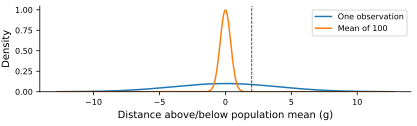
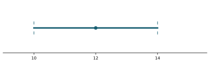
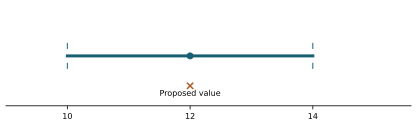
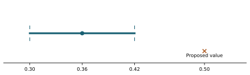

Statistics practice tests / All banks
Unit 4: Sampling distributions and estimation Chapters 7-8 · 100 questions · Four-function calculator allowed
Choose one answer. Reveal feedback after trying the question. All numerical scenarios are illustrative. The full bank and explanations are available for study; Chapter 9 is not tested.
Download printable PDF with key Download JSON for AI study Unit-test specifications
Study with AI Quiz me from this statistics unit bank, one question at a time. Keep all four choices visible, but withhold the correct answer and explanation until I respond. Ask me to explain my reasoning. Then give feedback, cite the question ID, and revisit missed concepts later. Use a mix of skill groups. Do not invent harder calculations.
Upload this bank's PDF or JSON along with that prompt.
Skill group All ten groups Sampling distributions and their centers Standard error and sample-size effects CLT assumptions, shape, and sampling quality Sums versus means Choosing models, areas, and approximations Confidence interval meaning and reading Interval width, conditions, and planning Student t and estimated uncertainty Proportion estimates, intervals, and interpretation Proportion conditions, precision, and adjustment Reveal all answers 100 questions
U4-G01: Sampling distributions and their centers
U4-001. A researcher takes 1,000 samples of 25 packages and plots each sample mean. What does one plotted value represent? The mean of all 25,000 packages combined. The mean of one 25-package sample. A population parameter that changes on each sample. The mass of one package. Slides 7.1, page 1: A sampling distribution · interpret
Reveal answer and explanation B. The mean of one 25-package sample.
A sampling distribution records a statistic from each repeated sample.
U4-002. In 1,000 repetitions, each sample contains 25 independent observations. What n belongs in SD/sqrt(n) for the mean? 25. 25,000. 975. 1,000. Slides 7.1, page 3: Sample size versus repetitions · interpret
Reveal answer and explanation A. 25.
The sample size is observations per mean, not the number of repetitions.
U4-003. A population has mean 50. Where are unbiased random-sample means centered? At 50. At the population SD. At 50 divided by sample size. At zero. Slides 7.1, page 5: Center of the sample means · interpret
Reveal answer and explanation A. At 50.
The expected sample mean equals the population mean under the sampling assumptions.
U4-004. Which quantity describes how sample means vary from sample to sample? The population mean. The sample size. The range of all individuals alone. Standard error. Slides 7.1, page 6: Standard error · compare
Reveal answer and explanation D. Standard error.
Standard error is the SD of a statistic's sampling distribution.
U4-005. Individual masses have SD 20 g; means of 25 independent masses have SD 4 g. Which spread applies to one package? 4 g. 20 g. 16 g. 0.8 g. Slides 7.1, page 8: SD versus standard error · compare
Reveal answer and explanation B. 20 g.
The individual distribution keeps its own SD; the mean uses a smaller SE.
U4-006. Larger independent samples yield less variable means. Does this make individual packages less variable? Yes; individual SD becomes zero. No; population spread stays the same. Yes; every package moves toward the mean. Only if more samples are plotted. Slides 7.1, page 26: The population remains variable · evaluate
Reveal answer and explanation B. No; population spread stays the same.
Averaging improves precision of the statistic without changing the population.
U4-007. A histogram is made from 500 means, each based on 20 observations. How many values are in that histogram? 20. 500. 520. 10,000. Slides 7.1, page 2: Data or sample means? · interpret
Reveal answer and explanation B. 500.
Each sample contributes one statistic, so there are 500 plotted means.
U4-008. A shipment contains 36 packages. Which variable answers the question of average mass per package in that shipment? The largest mass. The total mass without dividing. The sample mean. A single randomly chosen mass. Slides 7.1, page 4: An observation and an average · compare
Reveal answer and explanation C. The sample mean.
The requested average is a statistic across the shipment's packages.
U4-009. Sample size rises from 25 to 100 under unbiased independent sampling. What happens to the center of sample means? It halves. It becomes zero. It stays at the population mean. It quadruples. Slides 7.1, page 5: Center of the sample means · predict
Reveal answer and explanation C. It stays at the population mean.
Sample size changes precision, not the expected sample-mean center.
U4-010. The population mean is unknown. Why are repeated-sample models useful for estimation? They guarantee every sample equals the population. They describe how far a sample mean might vary around that population mean. They make the population mean change randomly every day. They remove the need for representative sampling. Slides 7.1, page 28: From probability to inference · evaluate
Reveal answer and explanation B. They describe how far a sample mean might vary around that population mean.
Knowing sampling variability helps express uncertainty in an estimate.
U4-G02: Standard error and sample-size effects
U4-011. Population SD is 12 and n=36, with independent observations. sqrt(36)=6. What is the mean's SE? 6. 12. 2. 72. Slides 7.1, page 7: Standard error of the mean · calculate
Reveal answer and explanation C. 2.
Divide population SD by the supplied square root of sample size.
U4-012. Independent sample size quadruples with population SD fixed. What happens to SE of the mean? It doubles. It quarters. It stays unchanged. It halves. Slides 7.1, page 9: Changing sample size · predict
Reveal answer and explanation D. It halves.
SE scales as 1/sqrt(n), so a fourfold n reduces it by a factor of two.
U4-013. To halve SE, how must an independent sample's size change? Add 4 regardless of its current size. Multiply n by 2. Multiply n by 4. Divide n by 2. Slides 7.1, page 10: Reducing standard error · interpret
Reveal answer and explanation C. Multiply n by 4.
Squaring the desired precision factor gives the sample-size factor.
U4-014. Population SD doubles while sample size stays fixed. What happens to SE? It halves. It stays unchanged. It quadruples. It doubles. Slides 7.1, page 7: Standard error of the mean · predict
Reveal answer and explanation D. It doubles.
SE is proportional to population SD at fixed n.
U4-015. Sample means are centered at 40 with SE 2. Which mean is 1.5 SE above center? 42. 41.5. 43. 37. Slides 7.1, page 24: A specified standard-error distance · calculate
Reveal answer and explanation C. 43.
Add 1.5 times 2 to the center.
U4-016. Population mean is 20; SE of sample means is 2. An observed sample mean is 24. What standardized distance does it have? 2. 0.5. 12. 4. Slides 7.1, page 18: Standardizing an average · calculate
Reveal answer and explanation A. 2.
Its deviation is 4, or 2 standard errors.
U4-017. For a normal population, compare one mass exceeding mean+2 g with the mean of 100 independent masses exceeding the same cutoff. Which is more likely? 
Both have probability zero. They are equally likely. The individual mass event. The 100-mass mean event. Slides 7.1, page 25: One value versus a mean · compare
Reveal answer and explanation C. The individual mass event.
Averaging narrows the distribution around the same center.
U4-018. Two samples have the same observed mean above a claimed population mean and the same population SD, but sizes 25 and 100. Which mean is farther above in SE units? The size-100 mean. The size-25 mean. The larger sample changes the claimed mean. They are equally far. Slides 7.1, page 27: A surprising sample mean · compare
Reveal answer and explanation A. The size-100 mean.
The larger sample has smaller SE, making the same absolute gap more SE units.
U4-019. SE is 4 at n=25. What is SE at n=100, with the same population SD and independence? 2. 1. 8. 4. Slides 7.3, page 34: Predicting precision · calculate
Reveal answer and explanation A. 2.
Quadrupling n halves SE.
U4-020. Increasing n from 100 to 400 halves SE. Would adding the same 300 observations to any starting n always halve SE? No; the ratio of sample sizes matters. No; SE never changes. Yes; SE depends only on added observations. Yes; an extra 300 always halves it. Slides 7.1, page 9: Changing sample size · compare
Reveal answer and explanation A. No; the ratio of sample sizes matters.
The square-root relation depends on the multiplicative change in n.
U4-G03: CLT assumptions, shape, and sampling quality
U4-021. The CLT supports an approximately normal distribution of large-sample means. What does it not claim? Larger independent samples can have smaller SE. Sampling distributions concern statistics. Means can have approximately normal sampling distributions. Individual observations become normally distributed. Slides 7.1, page 11: The central limit theorem · evaluate
Reveal answer and explanation D. Individual observations become normally distributed.
The CLT concerns the average or sum, not a transformation of population shape.
U4-022. Independent observations come from an exactly normal population. Is n≥30 necessary for their mean to be normal? Yes; normal means are impossible below 30. Yes; individual normality disappears in small samples. No; the mean instead becomes uniform. No; their mean is normal for any positive sample size. Slides 7.1, page 12: An exactly normal population · evaluate
Reveal answer and explanation D. No; their mean is normal for any positive sample size.
Independent normal observations have an exactly normal average.
U4-023. A population is strongly right-skewed and n=5. What is the best judgment about a normal model for the mean? It is exact for every skewed population. It is guaranteed by the existence of a mean. It must be left-skewed. It is not automatically justified. Slides 7.1, page 13: A skewed population · evaluate
Reveal answer and explanation D. It is not automatically justified.
Small samples may retain substantial population skewness.
U4-024. Someone says n=30 guarantees normal sample means for every population. What is the problem? Thirty is too large for any sample. Sample means can never approach normality. Skewness and extreme observations affect how large n needs to be. Only populations with mean zero qualify. Slides 7.1, page 14: No universal cutoff · evaluate
Reveal answer and explanation C. Skewness and extreme observations affect how large n needs to be.
There is no universal cutoff guaranteeing a good normal approximation.
U4-025. Fifty readings taken seconds apart from one fluctuating machine are treated as independent. What should be checked? Whether 50 is an integer. Dependence between nearby readings. Whether the mean can be calculated. Whether readings have units. Slides 7.1, page 15: Independence · evaluate
Reveal answer and explanation B. Dependence between nearby readings.
Correlation can undermine the usual independent-observation SE formula.
U4-026. A sample of 200 is drawn without replacement from 500. Does it meet the course's at-most-10% independence guideline? Yes; every random sample meets the guideline. Yes; 200 is larger than 30. No; samples must contain fewer than 10 observations. No; it is 40% of the population. Slides 7.1, page 16: Sampling without replacement · calculate
Reveal answer and explanation D. No; it is 40% of the population.
The sample fraction is 200/500, well above 10%.
U4-027. Only successful downloads are sampled to estimate duration for all attempts. Does a small SE remove that selection problem? Yes; enough successful downloads represent failures automatically. Yes; a normal curve proves unbiased selection. No; SE must equal the mean. No; precision does not correct selection bias. Slides 7.3, page 20: A selection problem · evaluate
Reveal answer and explanation D. No; precision does not correct selection bias.
A precise estimate can still target the wrong population because of biased coverage.
U4-028. A sample grows from 50 to 51 observations. Must its mean move closer to the population mean? Yes; the law of large numbers guarantees monotone improvement. No; individual additions can move it either way. Yes; every increase improves the estimate. No; larger samples always worsen estimates. Slides 7.3, page 21: The law of large numbers · evaluate
Reveal answer and explanation B. No; individual additions can move it either way.
Long-run stabilization does not guarantee improvement at each additional observation.
U4-029. For independent observations with finite variance, compare repeated means at n=1 and n=100. What is generally expected? The n=1 histogram must be normal. Means at n=100 are less spread and often more nearly normal. The population itself becomes less spread. Every size-100 mean is identical. Slides 7.3, page 23: A repeated-sample experiment · predict
Reveal answer and explanation B. Means at n=100 are less spread and often more nearly normal.
Averaging reduces spread, and CLT behavior can change the sampling-distribution shape.
U4-030. All individual waits lie between 2 and 14. A normal approximation gives a tiny chance that a mean is below 2. How should this be interpreted? The true sample mean can actually be below every observation. The normal model is exact at every tail. It is approximation error outside the true support. The observations must include negative waits. Slides 7.3, page 18: Checking the approximation · evaluate
Reveal answer and explanation C. It is approximation error outside the true support.
An average cannot fall below the minimum possible individual value.
U4-G04: Sums versus means
U4-031. Twenty items have sample mean mass 5 g. What is their total mass? 0.25 g. 5 g. 100 g. 25 g. Slides 7.2, page 2: Mean and sum · calculate
Reveal answer and explanation C. 100 g.
Sample sum equals n times sample mean.
U4-032. Individual mean mass is 3 g. What is the expected total for 10 items? Exactly 30 g in every shipment. 10 g. 30 g. 3 g. Slides 7.2, page 3: The center of sums · calculate
Reveal answer and explanation C. 30 g.
Expected totals add, though actual totals vary.
U4-033. For independent items, the SD of a sum is sqrt(n) times individual SD. Why is n times SD generally wrong? All individual deviations have the same sign. Independent variances add; SD is then a square root. The total is always fixed. Means cannot be added. Slides 7.2, page 4: The spread of sums · interpret
Reveal answer and explanation B. Independent variances add; SD is then a square root.
Adding variances gives n times variance, hence sqrt(n) times SD.
U4-034. The number of independent items rises from 25 to 100. What happens to expected sum and SD of sum? Both halve. Expected sum quadruples; SD doubles. Expected sum stays fixed; SD halves. Both quadruple. Slides 7.2, page 7: Increasing the total sample · predict
Reveal answer and explanation B. Expected sum quadruples; SD doubles.
Sum mean scales with n and sum SD with sqrt(n).
U4-035. Independent sample size increases. What happens to spread in original units? SD of sums rises; SE of averages falls. Both rise. Both stay unchanged. Both fall. Slides 7.2, page 18: Sums versus averages · compare
Reveal answer and explanation A. SD of sums rises; SE of averages falls.
Totals aggregate variation while averages divide the total by n.
U4-036. For n=20, a total exceeding 240 is equivalent to which mean event? Mean exceeding 12. Mean exceeding 20. Mean below 12. Mean exceeding 240. Slides 7.2, page 16: An equivalent event · interpret
Reveal answer and explanation A. Mean exceeding 12.
Divide the total cutoff by the fixed sample size.
U4-037. A sum event and its equivalent mean event use correctly matched centers and SDs. How do their z-scores compare? Their signs must be opposite. The mean z-score is always zero. The sum z-score is n times larger. They are equal. Slides 7.2, page 17: The same standardized distance · compare
Reveal answer and explanation D. They are equal.
Scaling numerator and denominator by n leaves standardization unchanged.
U4-038. A fixed 5-kg container is added to a shipment of random item masses. What changes? Expected total stays fixed. Both mean and SD rise by 5 kg. Expected total rises by 5 kg; total SD is unchanged. Total SD doubles. Slides 7.2, page 21: Defining the correct total · predict
Reveal answer and explanation C. Expected total rises by 5 kg; total SD is unchanged.
A fixed additive quantity shifts the distribution without adding random variability.
U4-039. All items in a batch tend to be heavy or light together. What is questionable about sqrt(n) times individual SD for the total? It assumes independent variation. It predicts a nonnegative SD. It retains mass units. It uses the sample size. Slides 7.2, page 20: Checking dependence · evaluate
Reveal answer and explanation A. It assumes independent variation.
Positive dependence can make total variation larger than the independent formula predicts.
U4-040. A sum distribution has mean 100 and SD 4. What total is 2 SD above its mean? 108. 102. 104. 200. Slides 7.2, page 15: A specified distance for a sum · calculate
Reveal answer and explanation A. 108.
Add two times the sum's SD to its mean.
U4-G05: Choosing models, areas, and approximations
U4-041. A question asks whether the combined duration of 40 tasks exceeds one hour. Which variable should be modeled? The sum of 40 durations. The count of tasks alone. The median alone. One individual duration. Slides 7.3, page 1: Choosing the random variable · interpret
Reveal answer and explanation A. The sum of 40 durations.
The requested event is about total duration.
U4-042. An exponential population has mean 5. Which is generally more unusual under independent sampling: one duration above 7 or 100 durations averaging above 7? The single duration above 7. The average of 100 above 7. Neither can occur. They have equal probability. Slides 7.3, page 4: Comparing the two events · compare
Reveal answer and explanation B. The average of 100 above 7.
The average is far less variable around the same mean.
U4-043. A supplied sampling model gives P(mean≤12)=0.90. What is P(mean>12)? 0.10. 1.90. 0.50. 0.90. Slides 7.1, page 19: An upper-tail average · calculate
Reveal answer and explanation A. 0.10.
The two events are complements.
U4-044. A supplied normal distribution of sample means gives cumulative probabilities 0.15 at 8 and 0.85 at 12. What is the probability between 8 and 12? 1.00. 0.85. 0.15. 0.70. Slides 7.1, page 21: An average within a range · calculate
Reveal answer and explanation D. 0.70.
Subtract cumulative areas at the endpoints.
U4-045. The 95th percentile of a sample-mean distribution is 14. What does it describe? The unknown mean has become 14. Every sample mean is 14. 95% of all individuals must be at most 14. About 95% of repeated sample means are at most 14. Slides 7.1, page 22: A percentile of sample means · interpret
Reveal answer and explanation D. About 95% of repeated sample means are at most 14.
The percentile belongs to the sampling distribution, not automatically the individual distribution.
U4-046. The course's binomial normal approximation check requires np>5 and n(1-p)>5. For n=100, p=0.02, which judgment fits? It passes because p is positive. It passes because n exceeds 30. It fails because expected failures are 98. It fails because expected successes are only 2. Slides 7.3, page 25: Approximation conditions · evaluate
Reveal answer and explanation D. It fails because expected successes are only 2.
Both expected-count requirements must hold.
U4-047. Why approximate P(X=40) for a binomial count using a normal interval around 40 instead of a single point? A continuous model assigns zero probability to one exact point. Every count equals its mean. A normal model has no area. The count 40 is impossible. Slides 7.3, page 27: Continuity correction factor · interpret
Reveal answer and explanation A. A continuous model assigns zero probability to one exact point.
Continuity correction represents an integer count by a one-unit interval.
U4-048. Which continuous event uses the appropriate continuity correction for X≥45? Y>44.5. Y=45. Y>45.5. Y<44.5. Slides 7.3, page 28: At least: continuity correction · interpret
Reveal answer and explanation A. Y>44.5.
The included count 45 contributes the interval beginning at 44.5.
U4-049. Which continuous event approximates X≤45 with continuity correction? Y<45.5. Y<44.5. Y>45.5. Y=45. Slides 7.3, page 29: At most: continuity correction · interpret
Reveal answer and explanation A. Y<45.5.
Including the entire count-45 interval extends the upper boundary to 45.5.
U4-050. Which interval approximates the discrete event X=45? Y=45 only. Y>45.5. 44.5<Y<45.5. Y<44.5. Slides 7.3, page 32: Exactly: continuity correction · interpret
Reveal answer and explanation C. 44.5<Y<45.5.
The one-unit interval around 45 represents its discrete probability mass.
U4-G06: Confidence interval meaning and reading
U4-051. Why report a confidence interval instead of only a sample mean? It removes sampling bias. It lists every individual observation. It expresses uncertainty in estimating the population mean. It guarantees the true mean is the midpoint. Slides 8.1, page 3: An interval estimate · compare
Reveal answer and explanation C. It expresses uncertainty in estimating the population mean.
An interval communicates estimation precision beyond a single point estimate.
U4-052. Sample mean is 12 and margin of error is 2. What interval results? 
12 to 14. 10 to 14. 2 to 12. 6 to 24. Slides 8.1, page 4: A confidence interval form · calculate
Reveal answer and explanation B. 10 to 14.
Add and subtract the margin from the estimate.
U4-053. A symmetric confidence interval is 8 to 12. What point estimate is at its center? 10. 12. 4. 8. Slides 8.1, page 19: Recovering the point estimate · calculate
Reveal answer and explanation A. 10.
The midpoint is the estimate, not either endpoint.
U4-054. A symmetric interval is 8 to 12. What is the margin of error? 2. 10. 12. 4. Slides 8.1, page 20: Recovering the margin · calculate
Reveal answer and explanation A. 2.
Margin of error is half the total width.
U4-055. What does a 95% confidence procedure mean in repeated appropriate sampling? Every interval has 95% of its length below the mean. 95% of observations lie in every interval. About 95% of intervals constructed this way contain the fixed population mean in the long run. The sample mean equals the population mean 95% of the time. Slides 8.1, page 6: Confidence level · interpret
Reveal answer and explanation C. About 95% of intervals constructed this way contain the fixed population mean in the long run.
Confidence describes long-run coverage by the method.
U4-056. One hundred valid 95% intervals are constructed in repeated sampling. Must exactly 95 cover the mean? No; the coverage count itself can vary. No; all 100 must cover it. Yes; any other count proves bias. Yes; the confidence level fixes that count. Slides 8.1, page 7: A repeated-sample view · evaluate
Reveal answer and explanation A. No; the coverage count itself can vary.
A long-run proportion is not an exact finite-sample quota.
U4-057. After a specific interval is computed, what is correct about its relation to a fixed population mean? The endpoints must equal the smallest and largest observation. The fixed mean changes to fit it with probability 95%. The mean occupies 95% of the interval. It either contains that mean or does not; 95% describes the procedure. Slides 8.1, page 17: A fixed parameter · evaluate
Reveal answer and explanation D. It either contains that mean or does not; 95% describes the procedure.
Frequentist coverage refers to random intervals before observing the data.
U4-058. A 95% mean interval is 10 to 14 minutes. Does this say 95% of individual durations lie there? Yes; the mean and individuals have identical spread. No; it estimates the population mean. No; it instead guarantees every duration lies there. Yes; that is the meaning of any confidence interval. Slides 8.1, page 18: Mean versus individual values · evaluate
Reveal answer and explanation B. No; it estimates the population mean.
An interval for a parameter is different from an interval covering individual values.
U4-059. A mean interval is 10 to 14. How should a proposed mean of 12 be described? 
The only compatible value. Impossible. Compatible with the interval, without being proved exact. Proved to be the exact population mean. Slides 8.1, page 27: A value inside the interval · interpret
Reveal answer and explanation C. Compatible with the interval, without being proved exact.
Every interior value is compatible with the interval; the midpoint is not a certainty.
U4-060. A mean interval is 10 to 14 minutes. Which report matches its target? Exactly 95 of the next 100 durations will lie there. The procedure estimates the population mean duration between 10 and 14 minutes. The median is guaranteed to equal 12. Every future duration will be between 10 and 14. Slides 8.1, page 16: Interpreting the interval · interpret
Reveal answer and explanation B. The procedure estimates the population mean duration between 10 and 14 minutes.
The reported target is the population mean, with confidence understood as procedure coverage.
U4-G07: Interval width, conditions, and planning
U4-061. Using the same sample and method, confidence rises from 90% to 99%. What happens to interval width? It stays unchanged. It becomes zero. It decreases. It increases. Slides 8.1, page 21: More confidence · predict
Reveal answer and explanation D. It increases.
Higher coverage requires a larger critical multiplier and a wider interval.
U4-062. For known population SD and fixed confidence, n quadruples. What happens to the margin of error? It quarters. It halves. It stays unchanged. It doubles. Slides 8.1, page 22: More observations · predict
Reveal answer and explanation B. It halves.
The mean interval margin scales with 1/sqrt(n).
U4-063. At fixed n and confidence, known population SD doubles. What happens to interval width? It doubles. It quadruples. It stays unchanged. It halves. Slides 8.1, page 23: More population variation · predict
Reveal answer and explanation A. It doubles.
Margin and full width are proportional to population SD.
U4-064. A known-SD mean interval currently has margin 1. To target margin 0.5 at the same confidence, how should n change? Add 1 to n. Multiply n by 2. Multiply n by 4. Halve n. Slides 8.1, page 25: A precision target · interpret
Reveal answer and explanation C. Multiply n by 4.
Halving a square-root-based margin requires four times the observations.
U4-065. A sample-size formula returns 62.2 observations. Which planned integer size meets that minimum? 60. 62. 63. 61. Slides 8.1, page 24: Planning a sample size · interpret
Reveal answer and explanation C. 63.
Round a required minimum up to avoid falling short.
U4-066. A narrow interval uses only the fastest successful jobs to estimate the mean for all jobs. What is its main limitation? The mean cannot describe time. Biased selection can make the interval misleading despite narrow width. Its narrow width guarantees representativeness. Adding decimal places removes selection bias. Slides 8.1, page 26: Precision and bias · evaluate
Reveal answer and explanation B. Biased selection can make the interval misleading despite narrow width.
Precision cannot repair systematically excluded outcomes.
U4-067. Population SD is known and the sample is large. What still needs checking for the usual mean interval? Whether the interval includes zero. Whether every observation equals the mean. Whether the mean is a whole number. Sampling quality and independence. Slides 8.1, page 11: The known-SD method · evaluate
Reveal answer and explanation D. Sampling quality and independence.
A known SD does not replace sampling and dependence assumptions.
U4-068. A symmetric 90% confidence construction leaves what fraction in each tail? 0.10. 0.90. 0.05. 0.45. Slides 8.1, page 8: The two tails · calculate
Reveal answer and explanation C. 0.05.
The excluded 10% splits equally across two tails.
U4-069. For a known-SD mean interval, supplied SE=0.5 and critical multiplier=2. What is the margin of error? 1. 4. 0.25. 2.5. Slides 8.1, page 13: The mean margin of error · calculate
Reveal answer and explanation A. 1.
Margin equals critical multiplier times SE.
U4-070. From the same sample, a 90% and 99% mean interval are built with the same method. Which statement fits? Both widths must be identical. The 99% interval has a different sample mean. The 90% interval is wider. The 99% interval is wider but has the same center. Slides 8.1, page 21: More confidence · compare
Reveal answer and explanation D. The 99% interval is wider but has the same center.
Changing confidence changes the critical multiplier, not the observed estimate.
U4-G08: Student t and estimated uncertainty
U4-071. A sample contains 100 observations, but population SD is unknown. Does large n make that SD known? Yes; n≥30 makes population SD exact. No; the sample mean must also be unknown. Yes; the sample SD becomes the population parameter by definition. No; it is still estimated from data. Slides 8.2, page 1: An unknown population SD · evaluate
Reveal answer and explanation D. No; it is still estimated from data.
A larger sample can improve an estimate but does not make the parameter known.
U4-072. To estimate a population mean with unknown population SD using a sample SD, which standard method fits? A proportion interval regardless of variable type. A one-sample t interval. A Poisson count probability. A known-SD z interval treating s as known population SD. Slides 8.2, page 15: Choosing z or t · interpret
Reveal answer and explanation B. A one-sample t interval.
The t method accounts for estimating population SD.
U4-073. Why does a t interval use a larger critical multiplier than z at small degrees of freedom? The population mean is random in the formula. The confidence level is automatically 100%. Estimating SD adds uncertainty reflected in heavier tails. The observations must all be larger. Slides 8.2, page 4: The t distribution · interpret
Reveal answer and explanation C. Estimating SD adds uncertainty reflected in heavier tails.
The t reference distribution reflects additional variability from estimating SD.
U4-074. A one-sample t interval uses n=16. What degrees of freedom are used? 16. 15. 17. 256. Slides 8.2, page 5: Degrees of freedom · calculate
Reveal answer and explanation B. 15.
A one-sample mean t method uses n-1 degrees of freedom.
U4-075. Which t distribution has heavier tails? They have equal tails. Both have no tails. df=100. df=4. Slides 8.2, page 7: Changing degrees of freedom · compare
Reveal answer and explanation D. df=4.
Small degrees of freedom produce heavier tails and greater critical values.
U4-076. A small random independent sample comes from a normal population. Is n<30 alone a reason to reject a t interval? Yes; t requires at least 30 in every case. No; it must use a proportion interval. No; small normal samples can support the t method. Yes; normality is irrelevant below 30. Slides 8.2, page 12: A small normal sample · evaluate
Reveal answer and explanation C. No; small normal samples can support the t method.
Conditions matter; small n is not an automatic disqualification for normal data.
U4-077. A sample of 6 has strong skewness and an extreme outlier. What is sensible about a t interval? It is automatically reliable because t has heavy tails. Its reliability deserves caution. The outlier must be removed without investigation. Six observations guarantee a normal sampling distribution. Slides 8.2, page 13: A problematic small sample · evaluate
Reveal answer and explanation B. Its reliability deserves caution.
The small sample may not support the normality assumptions of the usual t method.
U4-078. Sample SD is 6 minutes and n=9; sqrt(9)=3. What estimated SE is used? 2 minutes. 18 minutes. 3 minutes squared. 6 minutes. Slides 8.2, page 2: An estimated standard error · calculate
Reveal answer and explanation A. 2 minutes.
Estimated SE is s/sqrt(n) and retains the measurement units.
U4-079. For comparison, sample SD and confidence are held fixed while n increases. What happens to a t mean interval's margin? It increases because there are more observations. It stays unchanged. It decreases as SE and the critical t value decrease. It becomes the population SD. Slides 8.2, page 21: A larger sample · predict
Reveal answer and explanation C. It decreases as SE and the critical t value decrease.
Larger n reduces estimated SE and increases degrees of freedom.
U4-080. A report gives sample SD=6 minutes and SE=1 minute. Which describes variation among individual observed times? The confidence level. 7 minutes. 6 minutes. 1 minute. Slides 8.2, page 19: Individual spread and mean precision · interpret
Reveal answer and explanation C. 6 minutes.
Sample SD describes observed individual spread; SE describes mean-estimation precision.
U4-G09: Proportion estimates, intervals, and interpretation
U4-081. 40 of 100 sampled jobs succeed. What is the sample success proportion? 0.60. 0.40. 2.5. 40. Slides 8.3, page 2: A sample proportion · calculate
Reveal answer and explanation B. 0.40.
Divide the success count by the sample size.
U4-082. Which question targets a population proportion? What is the mean duration of jobs? What is the SD of file sizes? What is the median number of pages? What fraction of jobs finish on time? Slides 8.3, page 6: A binary outcome · interpret
Reveal answer and explanation D. What fraction of jobs finish on time?
A proportion summarizes membership in a defined yes/no outcome.
U4-083. The success proportion is 0.35. What is the failure proportion? 0.35. 0.65. 0.175. 1.35. Slides 8.3, page 4: The failure proportion · calculate
Reveal answer and explanation B. 0.65.
Binary outcome proportions add to 1.
U4-084. A report gives 30 successes among 120 observations. Which is the estimate of population success proportion? 120. 30. 90. 0.25. Slides 8.3, page 5: Count or proportion? · interpret
Reveal answer and explanation D. 0.25.
The success count must be divided by the total to estimate the proportion.
U4-085. A proportion estimate is 0.40 with margin 0.05. What interval is this in percentages? 39.95% to 40.05%. 40% to 50%. 5% to 40%. 35% to 45%. Slides 8.3, page 18: Percentage points · calculate
Reveal answer and explanation D. 35% to 45%.
Convert the endpoints 0.35 and 0.45 to percentages.
U4-086. A 95% confidence interval estimates a population use rate. Does 95% mean that 95% of the population uses the service? No; 95% describes the interval procedure's coverage. No; it means 95 people were surveyed. Yes; confidence equals the use rate. Yes; all sample proportions equal 0.95. Slides 8.3, page 19: Confidence is about a procedure · evaluate
Reveal answer and explanation A. No; 95% describes the interval procedure's coverage.
Confidence level and the estimated parameter are different quantities.
U4-087. A population proportion interval is 0.30 to 0.42. How should a proposed proportion 0.50 be described? 
Proved impossible under every future sample. Compatible because 0.50 is a valid probability. The required sample estimate. Outside the interval and incompatible with this interval estimate. Slides 8.3, page 29: A claim and an interval · interpret
Reveal answer and explanation D. Outside the interval and incompatible with this interval estimate.
Being outside this interval is evidence against compatibility, not an absolute impossibility statement.
U4-088. A symmetric proportion interval is 0.20 to 0.30. What is the estimate and margin? Estimate 0.10; margin 0.05. Estimate 0.30; margin 0.25. Estimate 0.20; margin 0.10. Estimate 0.25; margin 0.05. Slides 8.3, page 32: Recovering a proportion estimate · calculate
Reveal answer and explanation D. Estimate 0.25; margin 0.05.
The midpoint is 0.25 and half-width is 0.05.
U4-089. A proportion interval is 20% to 30%. Which conclusion matches the target? The population percentage is estimated between 20% and 30%. Every individual has a value between 20 and 30. Exactly 25% of the sample must be successful. The mean duration is between 20 and 30 minutes. Slides 8.3, page 17: Interpreting a proportion interval · interpret
Reveal answer and explanation A. The population percentage is estimated between 20% and 30%.
The target is a population yes/no percentage, not a numerical measurement mean.
U4-090. A rate estimate rises from 40% to 45%. What is its increase in percentage points? 0.05 percentage points. 45 percentage points. 12.5 percentage points. 5 percentage points. Slides 8.3, page 18: Percentage points · compare
Reveal answer and explanation D. 5 percentage points.
Percentage-point difference subtracts the percentages directly, unlike relative percent increase.
U4-G10: Proportion conditions, precision, and adjustment
U4-091. The course's ordinary normal-approximation interval check requires more than 5 observed successes and more than 5 failures. Which sample passes? 8 successes and 12 failures. 2 successes and 98 failures. 5 successes and 95 failures. 20 successes and 0 failures. Slides 8.3, page 11: Successes and failures · evaluate
Reveal answer and explanation A. 8 successes and 12 failures.
Both observed counts must exceed 5 under the stated convention.
U4-092. A sample has 2 successes and 98 failures. Does a large total alone justify the ordinary normal-approximation proportion interval? Yes; n=100 guarantees every condition. No; proportions cannot be estimated at all. No; the observed success count is too sparse. Yes; failures are numerous. Slides 8.3, page 12: A sparse success sample · evaluate
Reveal answer and explanation C. No; the observed success count is too sparse.
The success-failure check concerns both counts, not just total n.
U4-093. Everyone in a few selected clubs is surveyed. What challenges treating all responses as independent? The sample proportion cannot be computed. Members of the same club may have correlated responses. Randomly selecting clubs guarantees individual independence. Club members cannot have binary responses. Slides 8.3, page 13: Independence for proportions · evaluate
Reveal answer and explanation B. Members of the same club may have correlated responses.
Cluster membership can introduce within-group dependence.
U4-094. 400 people are sampled without replacement from 20,000. Does this meet the at-most-10% sample-fraction guideline? No; n must be below 30. Yes; any random sample meets it. No; the fraction is 20%. Yes; the fraction is 2%. Slides 8.3, page 14: A sample fraction · calculate
Reveal answer and explanation D. Yes; the fraction is 2%.
400/20,000=0.02, within the stated guideline.
U4-095. Using the same sample and interval method, confidence increases. What happens to the proportion margin? It decreases. The sample proportion becomes the confidence level. It increases. It stays unchanged. Slides 8.3, page 23: Changing confidence · predict
Reveal answer and explanation C. It increases.
The higher-confidence critical multiplier increases the margin.
U4-096. For a comparison holding the observed proportion and confidence fixed, n quadruples. What happens to estimated margin? It halves. It stays unchanged. It quarters. It doubles. Slides 8.3, page 24: Changing sample size · predict
Reveal answer and explanation A. It halves.
The estimated SE and margin scale with 1/sqrt(n).
U4-097. Why use planning proportion 0.5 when no prior estimate is available? It guarantees half the population has the trait. It maximizes p(1-p), giving a conservative required sample size. It minimizes all margins to zero. It makes the sample unbiased automatically. Slides 8.3, page 26: Planning without an estimate · interpret
Reveal answer and explanation B. It maximizes p(1-p), giving a conservative required sample size.
The largest Bernoulli variance is at p=0.5, so planning protects against smaller assumed variation.
U4-098. An open voluntary poll has 50,000 replies and a very small calculated margin. What remains uncertain? Whether a proportion is numerical. Whether its respondents represent the target population. Whether 50,000 exceeds 30. Whether the calculated margin must be negative. Slides 8.3, page 28: Precision cannot remove bias · evaluate
Reveal answer and explanation B. Whether its respondents represent the target population.
A conventional sampling margin does not account for voluntary-response selection bias.
U4-099. The plus-four estimate adds two successes and two failures. With 8 successes out of 40, what adjusted fraction is used? 10/40. 10/44. 12/44. 8/44. Slides 8.3, page 20: The plus-four adjustment · calculate
Reveal answer and explanation B. 10/44.
The adjusted count is x+2 and the adjusted total is n+4.
U4-100. The slides recommend plus-four when confidence is at least 90% and n≥10. Does n=24 at 85% confidence meet that recommendation? Yes; plus-four has no stated conditions. Yes; n alone is sufficient. No; the confidence level is below the stated threshold. No; n must exceed 100. Slides 8.3, page 21: When to use plus four · evaluate
Reveal answer and explanation C. No; the confidence level is below the stated threshold.
Both stated recommendations must be met; this is distinct from the ordinary interval count check.